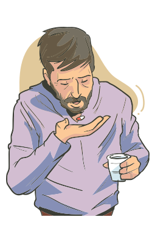

É possível identificar algum componente inflamatório em praticamente todas as doenças, em maior ou menor grau. Entretanto, existem algumas condições em que o componente inflamatório exibe um papel predominante, tanto na fisiopatologia quanto na sintomatologia, tornando seu controle um ponto crítico para uma terapêutica eficaz. Fitoterápicos podem auxiliar, em certas condições de menor gravidade, potencializando a medicação convencional, ou quando existem contraindicações ou limitações maiores para o uso de medicações convencionais, de primeira linha, em doentes com problemática específica.
